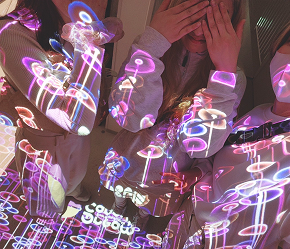
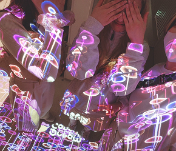

屋内に出現する、
立体映像体験。
これは“本当に飛び出している”わけではありません。
L字型のLEDビジョンに特殊な映像を映すことで、視覚の錯覚を利用して、立体的に見せる技術——それが今話題の「アナモルフィック演出」です。
新宿のクロスビジョンのような大型屋外ビジョンで注目を集めましたが、いま、その技術が屋内空間でも導入可能になりました。
人の流れが自然と集まる場所、ショッピングモールや駅のコンコースなどに設置することで、驚きと立ち止まりが生まれ、空間自体が“メディア”になります。


 
